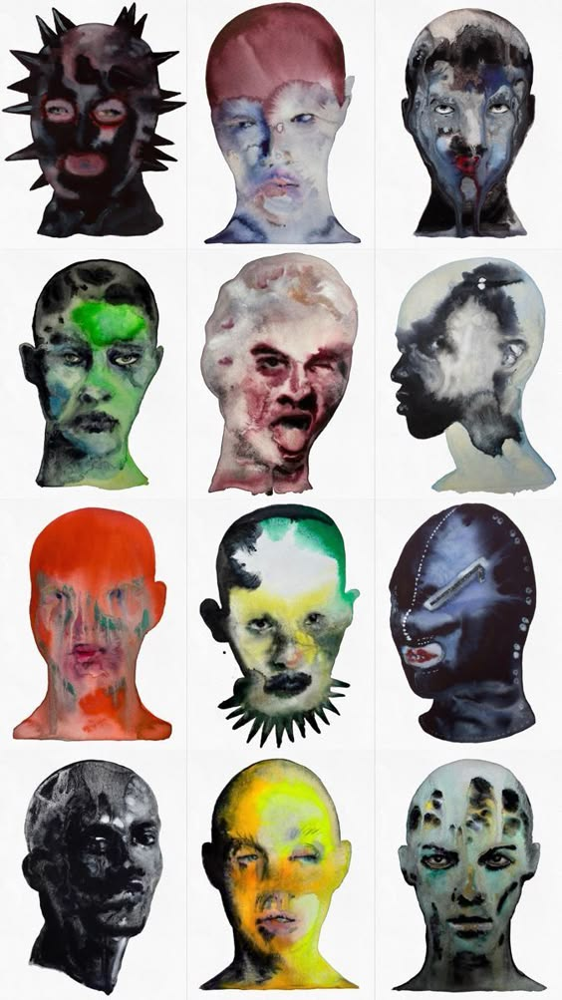
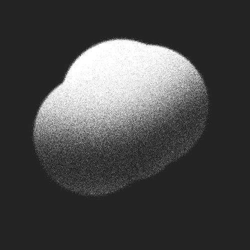

愛的萬物論
傻子與白痴
你是我最喜歡的人類
yingge, Waa Wei
舞舞舞
Jingfei
Slyly Child
Eartheater
可你听见了
DOUDOU
預兆
Silent Speech
英雄 - 現場
朝三
哈尔滨一九四四
梁龙
吞吐
八仙飯店
地球之鹽
Hua Chen Yu
這璀璨又迷人的星空卻讓人看不透
Silent Speech
黑天鹅
Yico Tseng
多余的流星
Yico Tseng
Skin
Yico Tseng
让我看见疯狂的你
Yico Tseng
不如我们重新来过
Yico Tseng
初吻
Yico Tseng
我不能爱你
Yico Tseng
艳遇
Yico Tseng
你是不會當樹嗎
Waa Wei
滾滾紅塵 - 现场
声音玩具
凡士林
八仙飯店
呕心小世界
八仙飯店
极乐寺
八仙飯店
昨夜我飞向遥远的火星
声音玩具
你是无可替代
声音玩具
雌雄同体
Yico Tseng
超级巨星
声音玩具
秘密的爱
声音玩具
抚琴小夜曲
声音玩具
一個適合看海的日子
許含光
爱玲
声音玩具
迷津 - 现场
八仙飯店
青少年哪吒
八仙飯店
单身旅记 - 录音室版
保质期艺术家, 八仙飯店
VIEWS
Noga Erez, Reo Cragun
Supremacy
Muse
Skin
Yico Tseng
夜车
Yico Tseng
最终观测
DOUDOU
Before The Doom
Laure Shang
楚門街 - 现场
八仙飯店